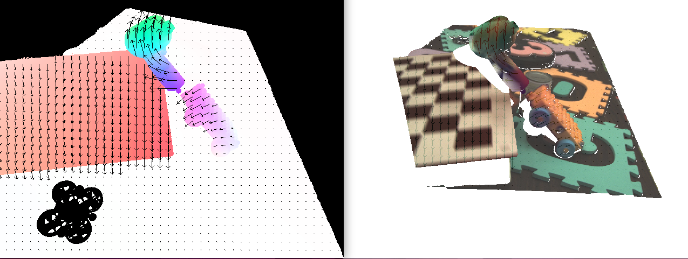

Ground Truth flow for EVIMO2
A tool is provided to calculate optical flow and reprojected RGB images for the event cameras from the EVIMO2v2 dataset. The source code for the tool is here.
Example Image: 
The output is similar to the EVIMO2v2 format. Inside a sequences folder, the tool generates:
File |
Description |
|---|---|
|
Dictionary of (RES_Y, RES_X, 2) arrays with keys |
|
Generated if |
Usage
As an example, to generate flow and reprojected RGB images for all the Samsung Mono IMO sequences in parallel, while visualizing them on the screen, the command is:
evimo_flow.py --quiet --visualize --overwrite --reprojectbgr
--format=evimo2v2 --dt=0.01666666 samsung_mono/imo/*/*
A convincing example showing reprojected bgr and optical flow alignment is:
evimo_flow.py --overwrite --visualize --wait --reprojectbgr
--format=evimo2v2 --dframes 3 samsung_mono/imo/eval/scene15_dyn_test_05_000000
The --dframes argument (as opposed to --dt) causes the displacement arrows to align with the new position on points in the scene in the future. The displacements are correct for even for high values, like 10, or 20 frames ahead from the current gt_frame. Combined with the --wait flag, we use --dframes to make sure everything is working correctly.
The full list of flags is:
evimo_flow.py [-h] [--dt DT] [--quiet] [--visualize] [--overwrite] [--wait] [--dframes DFRAMES]
[--format FORMAT] [--reprojectbgr] [--use_ros_time] [--reproject_z_tol REPROJECT_Z_TOL]
[--max_m_per_s MAX_M_PER_S] [--max_norm_deg_per_s MAX_NORM_DEG_PER_S]
[sequence_folders ...]
See the argparse documentation and the header comment in the script for the most up to date description of the flags.
Notes
The sequence folders can be a list, and if so, the flow will be generated in parallel.
Because EVIMO2 does not have depth for background pixels, missing flow values are set to NaN.
The flow frame timestamps can skip when Vicon has lost track and ground truth depth is no longer available.
The output flow is displacements in pixels over the time period timestamp to end_timestamp.
To obtain flow speed in px/s, divide displacement dx,dy by the time difference (t_end-t).